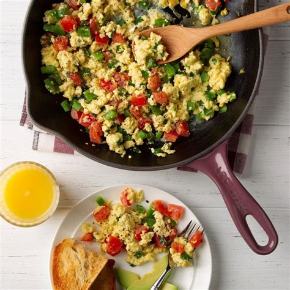

Scrambled Eggs

In this page, I'll explain how to make scrambled eggs.
Scrambled eggs are probably one of the most simple meals that you can prepare.
But, even if they are simple to make, if you do them correctly and with ingredients that suit your taste, they can become one of the best meals for you.
Ingredients to make scrambled eggs.
- Eggs
- Milk or Water (optional)
- Salt
- Butter or Oil
- Topics like cheese, spices and so on (optional)
How to make scrambled eggs
- Whisk your eggs (if you want you can add milk or water).
- Pour the mixture into a preheated (preferably nonstick) skillet with melted butter or oil.
- Cook over medium-low heat, gently stirring until the eggs are softly set.
- Then add seasoning like salt or pepper and, if you want, topics of your choosing (optional).
Home